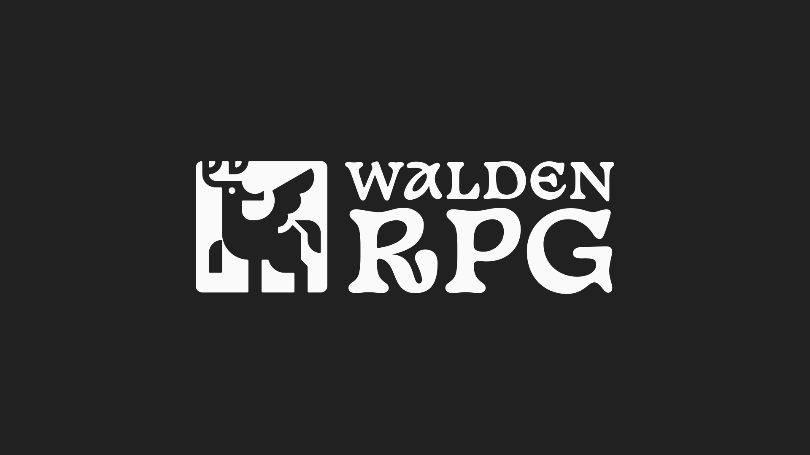
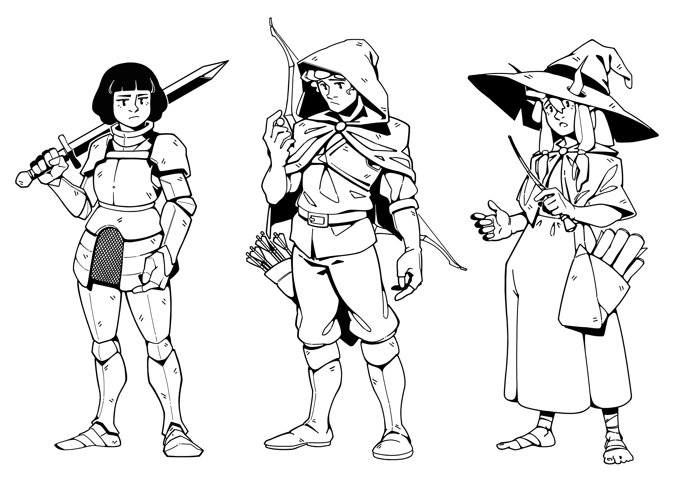
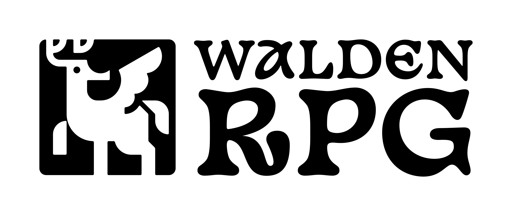
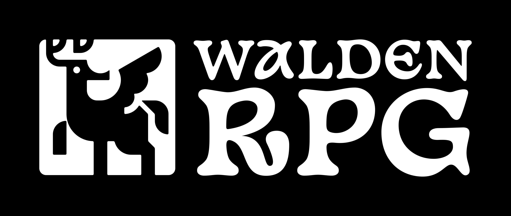
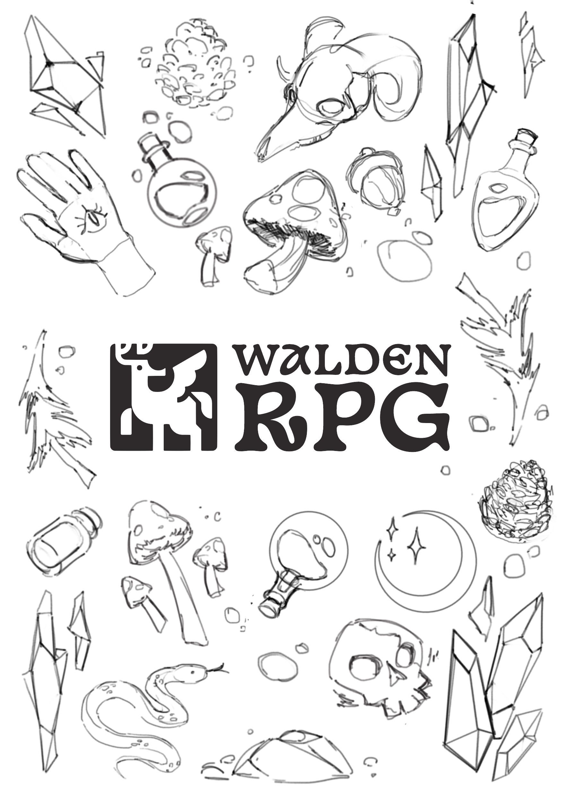
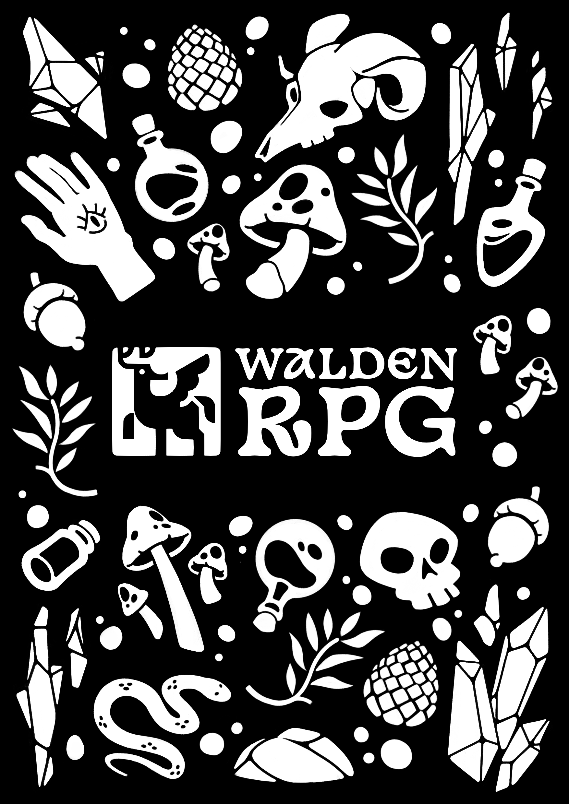
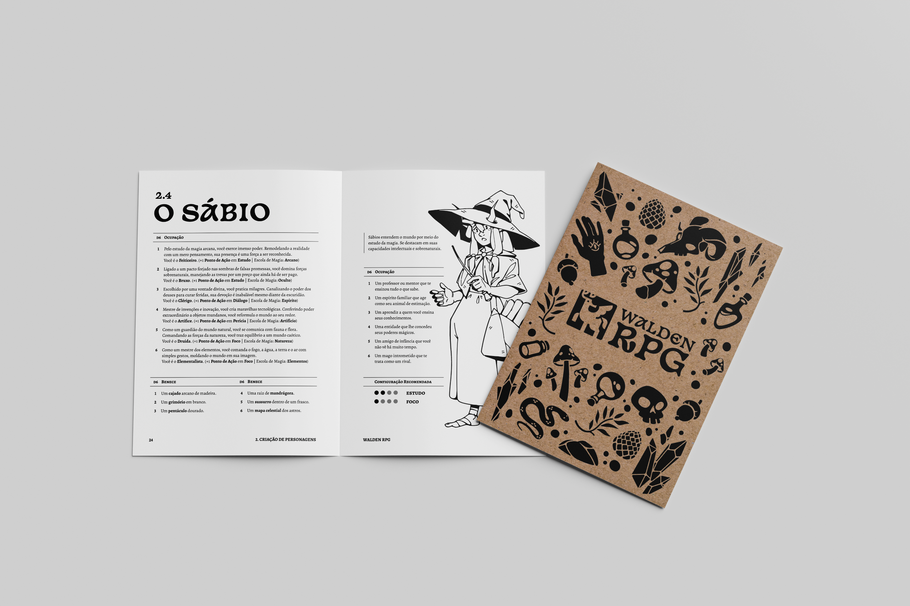
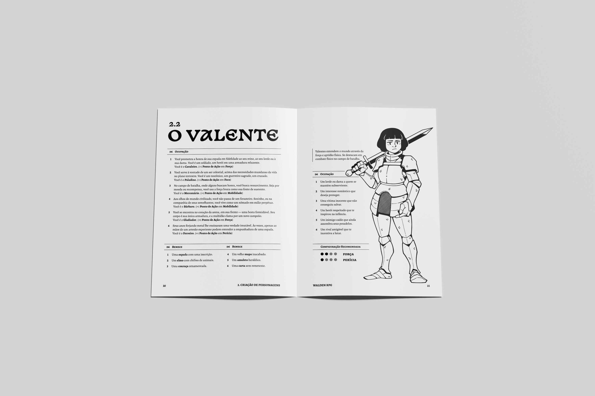
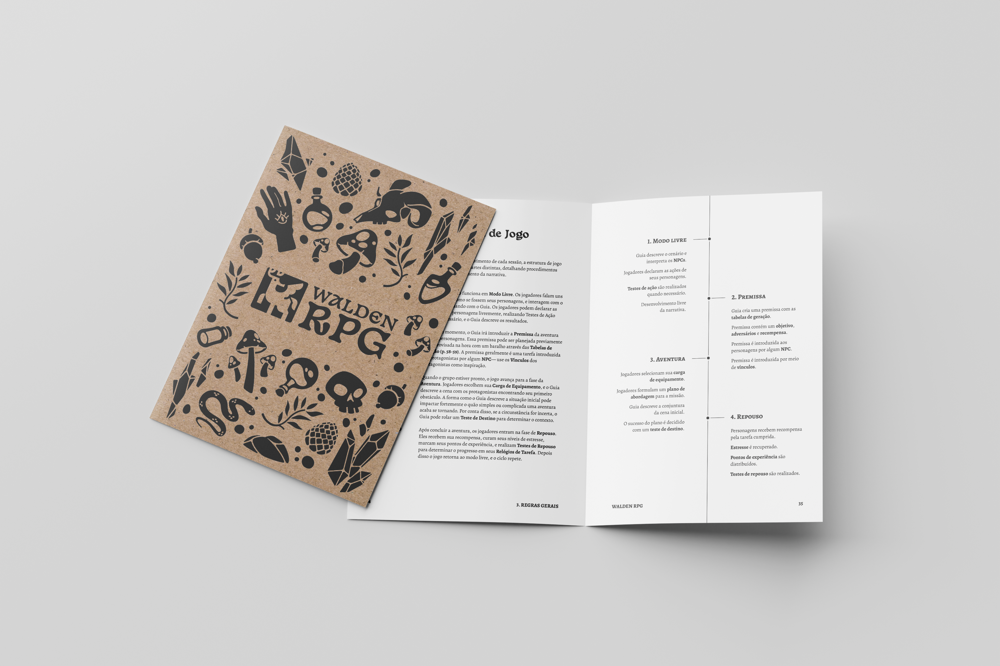
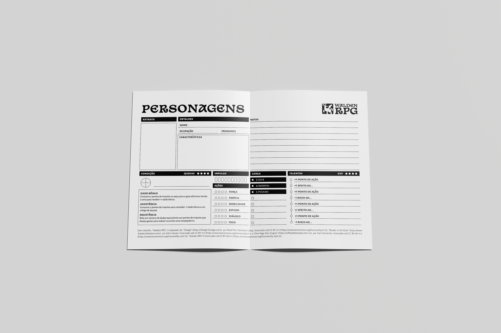

Walden RPG
Criação de um RPG de mesa para o desenvolvimento socioemocional de jovens no espectro autista.

Trabalho de conclusão de curso em Design Gráfico na Universidade Estadual de Londrina. O tema do projeto foi a criação de um RPG de mesa — um jogo tradicional de interpretação de papeis — direcionado como ferramenta lúdica para o desenvolvimento socioemocional de jovens com TEA (Transtorno do Espectro Autista).
A metodologia utilizada seguiu o modelo Double Diamond, dividindo o processo de design em quatro etapas: descoberta, definição, desenvolvimento e entrega. A descoberta foi embasada em pesquisa de mercado, de usuários, e uma entrevista conduzida com o professor Hélio Cruz Leão, especialista em AH/SD (Altas Habilidades/Superdotação) e TEA. A definição aplicou ferramentas de design thinking, como SWOT, canvas de proposta de valor, personas e uma análise de correlatos entre sistemas de RPG. O desenvolvimento partiu das etapas de ideação, seguidas pelos aspectos práticos da execução do projeto: como a redação do corpo textual, a diagramação, a construção da logo e confecção das ilustrações. Por fim, a entrega teve base nas especificações da produção gráfica, além da inclusão de mockups aproximados do produto final impresso.
Ilustrações - Arquétipos de Fantasia Medieval.

Logo Walden RPG - Positiva e Negativa.


Capa do Manual - Sketch e Arte Final.


Mockups - Produto Final.



